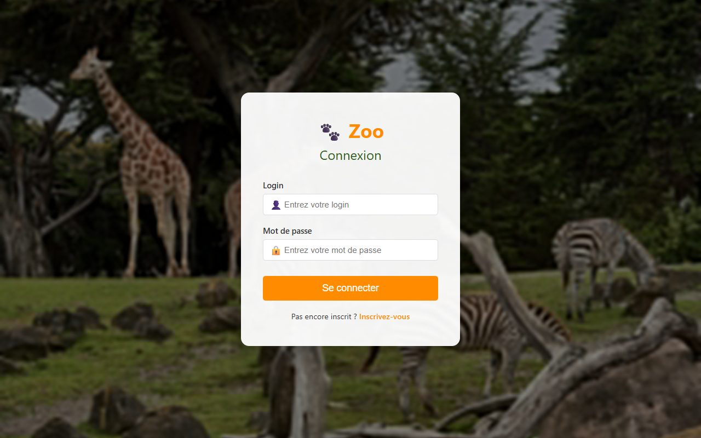
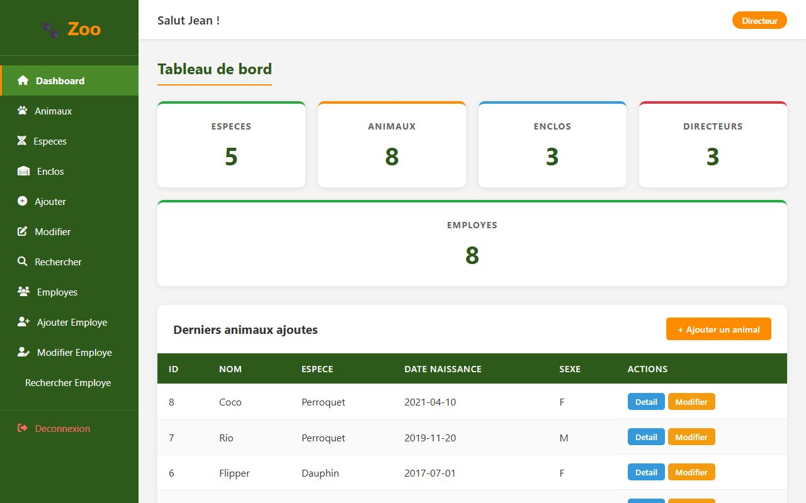
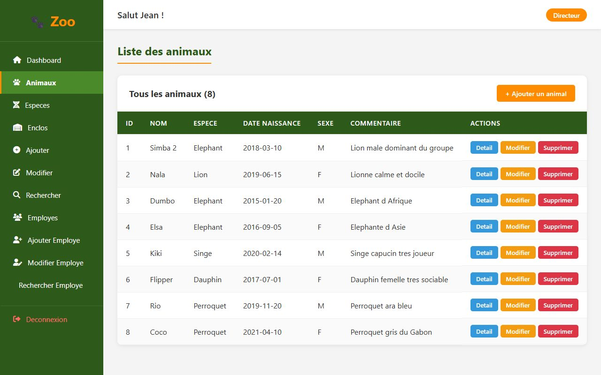
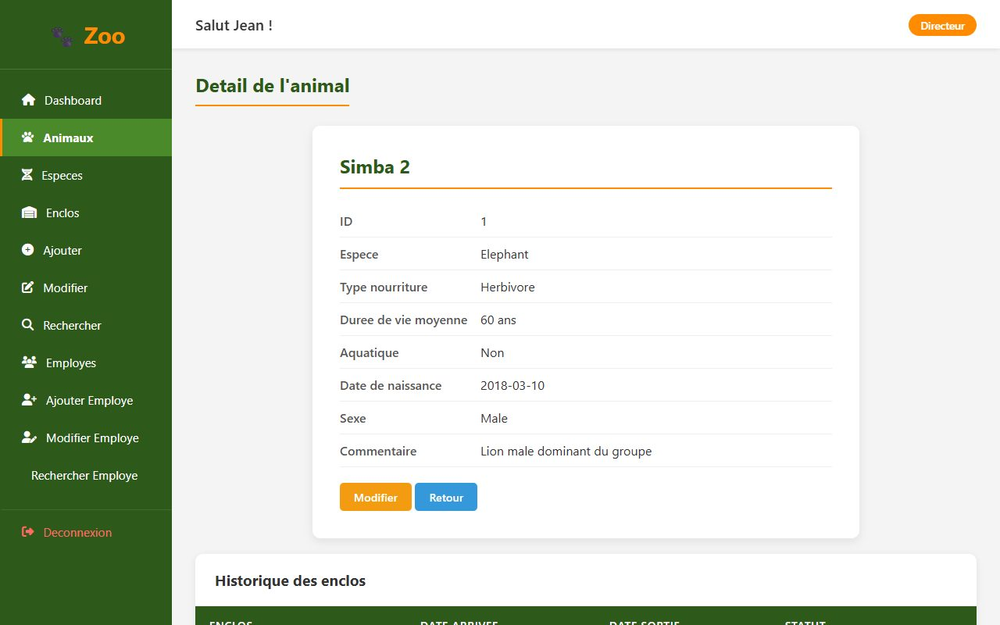
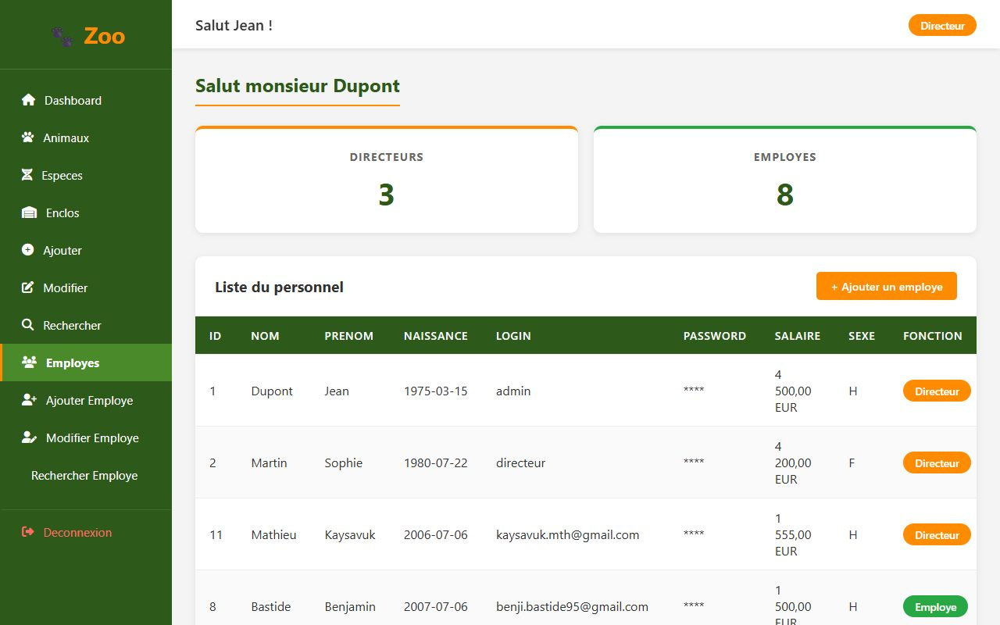
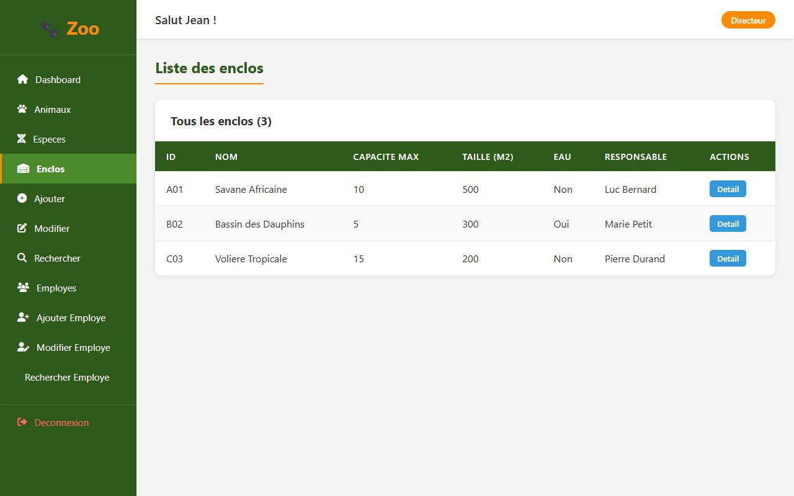

Application web de gestion d'un zoo. Après connexion, le personnel accède à un tableau de bord
et gère les animaux, les espèces et les enclos. Les directeurs disposent en plus d'un espace
pour gérer les employés.
APERÇU DE L'APPLICATION

Page de connexion

Tableau de bord

Liste des animaux

Fiche détaillée d'un animal

Gestion des employés (directeur)

Liste des enclos
FONCTIONNALITÉS
Connexion, inscription et déconnexion du personnel.
Tableau de bord avec statistiques et derniers animaux ajoutés.
Animaux : ajout, fiche détaillée, modification, suppression et recherche.
Espèces et enclos : liste, détail et ajout d'espèces.
Gestion des employés réservée aux directeurs : ajout, modification, suppression et recherche.
Validation des formulaires en JavaScript.
ORGANISATION DU CODE
Un dossier par module : animaux, especes, enclos, employes, auth.
En-tête, pied de page et contrôle de session regroupés dans includes.
Connexion à la base centralisée dans un seul fichier, avec PDO.
BASE DE DONNÉES
5 tables. Chaque animal appartient à une espèce. La table loc_animaux garde l'historique des enclos occupés par un animal (dates d'arrivée et de sortie), et chaque enclos a un responsable parmi le personnel.